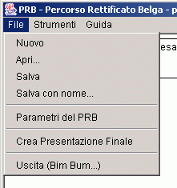
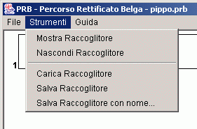
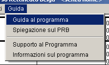

| Principale | Schede | Menu | Multimedia | PRB | Raccoglitore | Indice | Credits |
|
|
|
I menu a tendina sono due: il menu File ed il menu Guida.  Nuovo : Crea un nuovo Percorso Rettificato Belga Multimediale. Nel caso ne fosse già aperto uno di cui non sono stati ancora salvati i cambiamenti, viene richiesta conferma. L'eventuale Percorso aperto verrà chiuso. Apri... : Permette di richiamare un Percorso Rettifificato Belga Mulitmediale salvato su disco in precedenza e di sostituirlo a quello attualmente aperto. Nel caso quello attualmente aperto non abbia delle modifiche non salvate, viene richiesta conferma prima di procedere alla apertura di quello da disco. Salva : Salva le modifiche apportate sul Percorso Rettificato Belga Multimediale attivo nel file attualmente in uso. Se non fosse stato ancora scelto un file per la persistenza su disco del nostro Percorso, verrà richiesto di sceglierne uno. Salva con nome... : Salva il Percorso Rettificato Belga Multimediale attuale nel file che viene specificato. Parametri del PRB : Apre la finestra di dialogo per la definizione del titolo del PRBM, della località di rilevamento, della data del rilevamento e dell'ultima modifica, degli autori, delle eventuali note ed del tipo di estensione che si vuole dare ai file nella esportazione per il web. Crea presentazione finale : Crea il file ultimo e i suoi files collegati, quelli che poi potranno essere presentati come risultato del lavoro ed eventualmente essere distribuiti per via telematica ad altri scouts. In pratica il PRBM crea un indice pricipale HTML con i link a tutte le schede. Queste ultime vengono poi presentate anche loro come una pagina HTML in cui sono presenti tutte le informazioni inserite e gli eventuali files Audio - Video - Immagini allegate . Per sapere come leggere e navigare il pacchetto finale si fa riferimento alla guida allegata ai files generati automaticamente. Per vedere come sarà la schermata finale della presentazione di un PRBM tipico clicca qui . Uscita (Bim Bum...) : Esce dal programma con Crack, mentre Oops! per annullare
Attraverso questo menu è possibile accedere alle funzionalità che riguardano il raccoglitore, utile strumento per la condivisione e lo scambio di schede tra Percorsi differenti.  Mostra Raccoglitore : Mostra la finestra del raccoglitore attivo. Nascondi Raccoglitore : Nasconde, senza chiudere la finestra del raccoglitore attivo. Apri Raccoglitore... : Permette di aprire un raccoglitore precedentemente salvato su disco e di chiudere quello attuale. I file che contengono un raccoglitore hanno estensione .prbr . Se il il raccoglitore attuale avesse delle modifiche non salvate, viene richiesta conferma prima di chiuderlo. Salva Raccoglitore : Salva le modifiche del raccoglitore sul file attualmente in uso. Se non fosse stato ancora stato scelto un file per il salvataggio, verrà richiesto con l'apposita finestra di dialogo. Salva Raccoglitore con nome... : Salva il raccoglitore sul file verrà scelto con l'apposita finestra di dialogo.
Dal Menu Guida si accede a queste modalità: Guida al programma: Si accede al Sommario di questa Guida  Spiegazione sul PRB: Si accede ad una breve spiegazione sul Percorso Rettificato Belga . Supporto al programma: Indicazioni su dove trovare aiuto e supporto per questo programma Informazioni sul programma: Informazioni e credits sui realizzatori del programma. |

{kind=link}